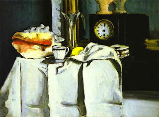

Zevachim 30 - Two Invalidations Invalidate Each Other
Here is a general rule: all the invalidations and rejections discussed before happen only when everything else was done properly. For example, if while receiving the blood, one had an intent to eat the sacrifice beyond allotted time, it becomes rejected - but only if the other services were done with the correct intent. Another condition for rejection is that one should also plan to eat those parts that are normally eaten, and burn those that are normally burned. However, if on the subsequent step of the service he had an wrong intent to continue outside the allowed place - the two intentions clash, and the invalidation does not happen.
Rabbi Yehudah disagrees and says that in the case where the more serious disqualification "outside of permitted time" occurred first, later wrong intent does not matter.
Art: Paul Cezanne - The Black Clock